plot(
x = mtcars$wt,
y = mtcars$mpg,
xlab = "Weight (1000 lbs)",
ylab = "Miles Per Gallon",
main = "MPG vs. Weight",
pch = 19, # Solid circle points
col = "blue"
)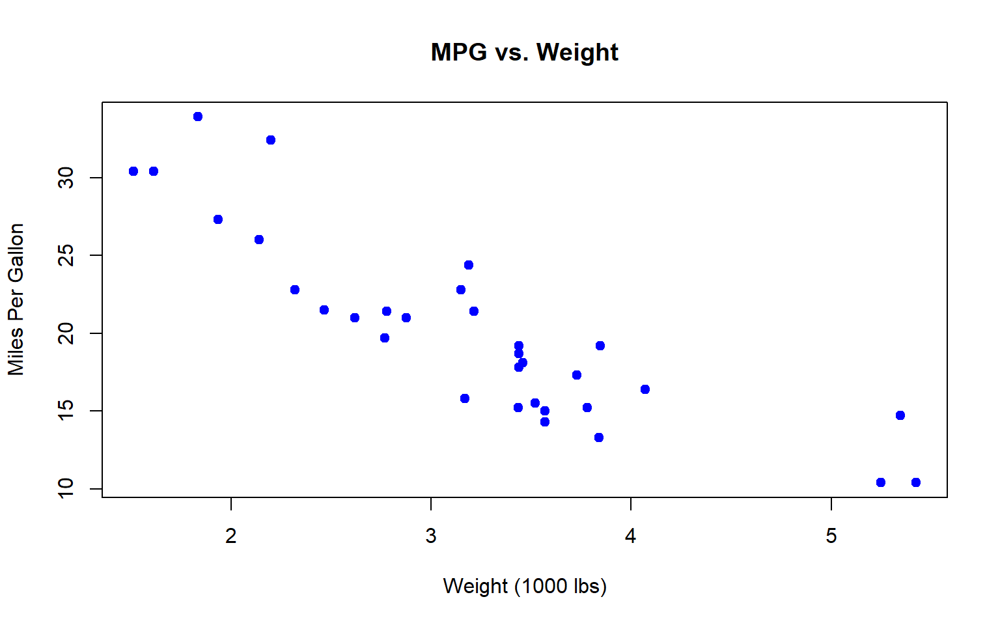
Trực quan hóa nó để truyền bá thông tin.
Trong R-based, chúng ta sử dụng plot() để vẽ hình.
Trong tidyverse, chúng ta sử dụng gói ggplot2
Base R:
plot(
x = mtcars$wt,
y = mtcars$mpg,
xlab = "Weight (1000 lbs)",
ylab = "Miles Per Gallon",
main = "MPG vs. Weight",
pch = 19, # Solid circle points
col = "blue"
)
ggplot2:
library(ggplot2)
ggplot(mtcars, aes(x = wt, y = mpg)) +
geom_point(color = "blue") +
scale_x_continuous("Weight (1000 lbs)") +
scale_y_continuous("Miles Per Gallon") +
ggtitle("MPG vs. Weight") +
theme_bw()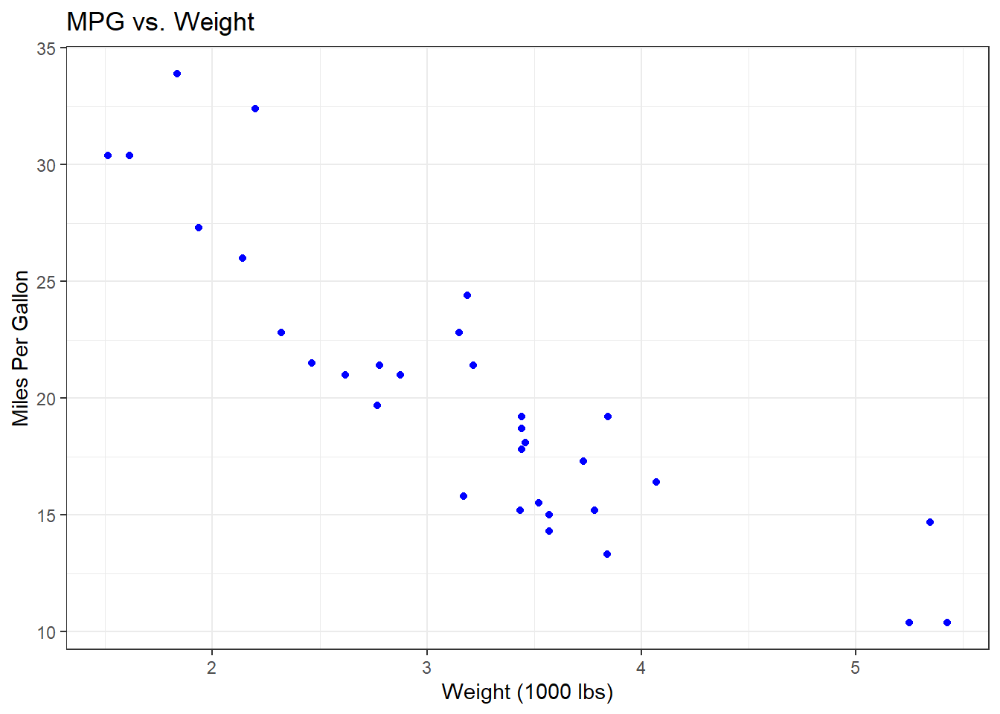
ggplot2ggplot2 hoạt động trực tiếp với dữ liệu tidy (giống như mọi thứ trong tidyverse).
Nó dựa trên một khái niệm gọi là grammar of graphics.
Có tài liệu hướng dẫn toàn diện về cách sử dụng.
Cung cấp đủ tính linh hoạt để tùy chỉnh.
ggplot2Một khuôn khổ để mô tả và xây dựng biểu đồ theo cách có cấu trúc.
Phương pháp tiếp cận theo layer, tức là mỗi thành phần của một hình là các layer riêng biệt.

ggplot(mtcars, aes(x = wt, y = mpg)) +
geom_point(color = "blue") +
scale_x_continuous("Weight (1000 lbs)") +
scale_y_continuous("Miles Per Gallon") +
ggtitle("MPG vs. Weight") +
theme_bw()
mtcarsaes(x = wt, y = mpg)geom_pointscale_x_continuous, scale_y_continuoustheme_bw, ggtitleggplot2 chỉ chạy với dữ liệu là data frame và không thể chạy với loại dữ liệu khác (ví dụ: ma trận hoặc vectơ).
aes().x, y.color, fill.df <- data.frame(
x = 1:10,
y = (1:10)^2,
group = rep(c("A", "B"), each = 5)
) ggplot(df, aes(x, y, color = group)) +
geom_col()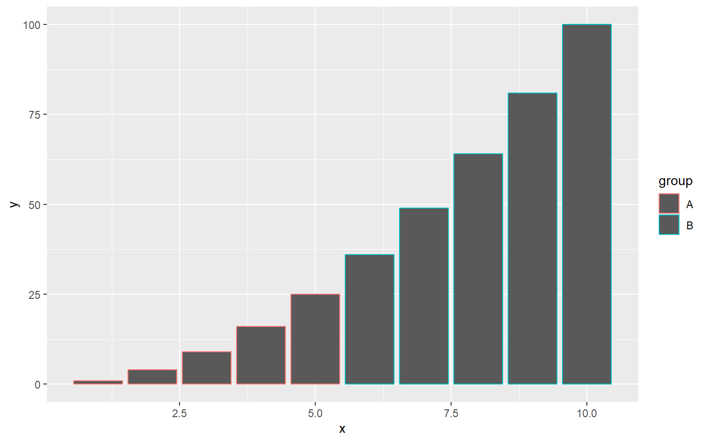
ggplot(df, aes(x, y, fill = group)) +
geom_col()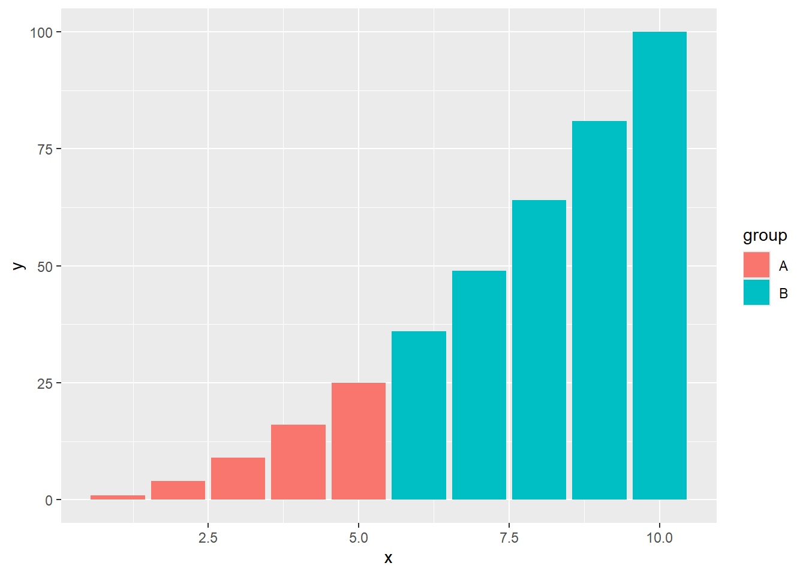
geom_col or geom_bar: biểu đồ cột/ thanhgeom_histogram: histogramsgeom_point: biểu đồ chấm (scatter)geom_line or geom_smooth: biểu đồ đường (làm mượt)geom_boxplot: biểu đồ hộpData, aesthetic, geometric đối tượng là thành phần quan trọng của biểu đồ, nếu cấu trúc này không đủ thì cốt truyện sẽ không hoạt động.
geom_point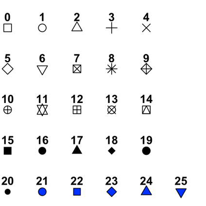
scale_x_..., scale_y_..., xlim, ylim,…scale_color_..., scale_fill_...,…labstheme_classic, theme_minimal,…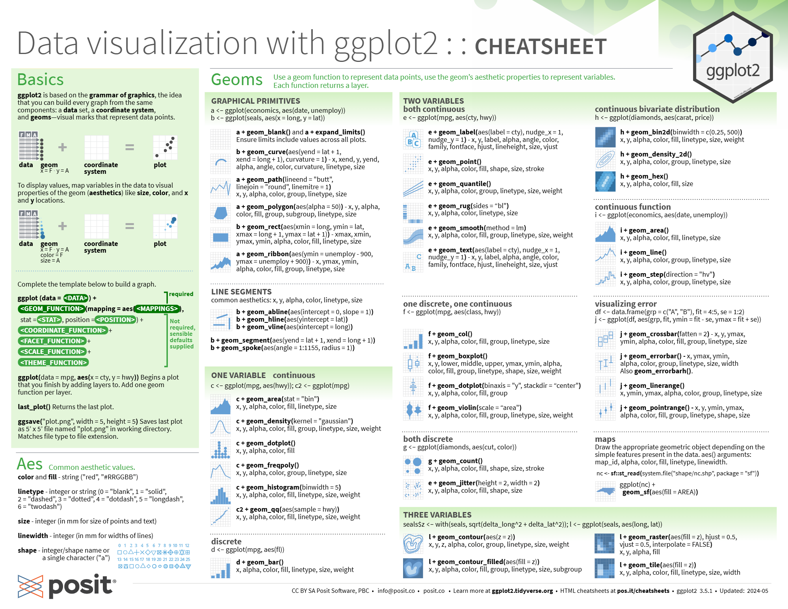
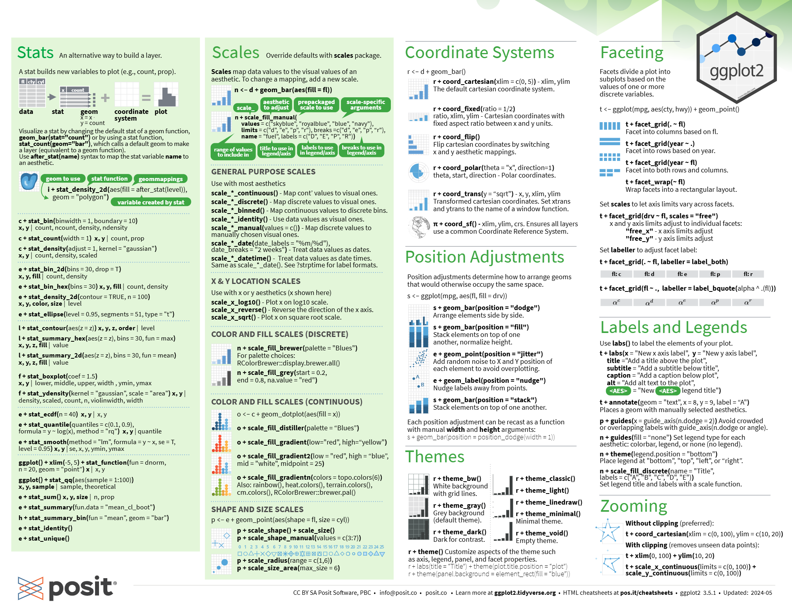

country <- c("Angola", "Papua New Guinea", "Pakistan", "Chad", "Ethiopia", "Kenya", "Nigeria", "Liberia", "Burkina Faso", "India")
coverage <- c(-0.14, -0.35, 0.12, 0.14, 0.32, 0.07, 0.2, 0.18, 0.3, 0.35)
inequality <- c(0.1, 0.08, 0.05, 0.01, 0.005, -0.06, -0.07, -0.11, -0.13, -0.16)
df_plot <- data.frame(country, coverage, inequality)
df_plot country coverage inequality
1 Angola -0.14 0.100
2 Papua New Guinea -0.35 0.080
3 Pakistan 0.12 0.050
4 Chad 0.14 0.010
5 Ethiopia 0.32 0.005
6 Kenya 0.07 -0.060
7 Nigeria 0.20 -0.070
8 Liberia 0.18 -0.110
9 Burkina Faso 0.30 -0.130
10 India 0.35 -0.160ggplot(df_plot, aes(x = coverage, y = inequality))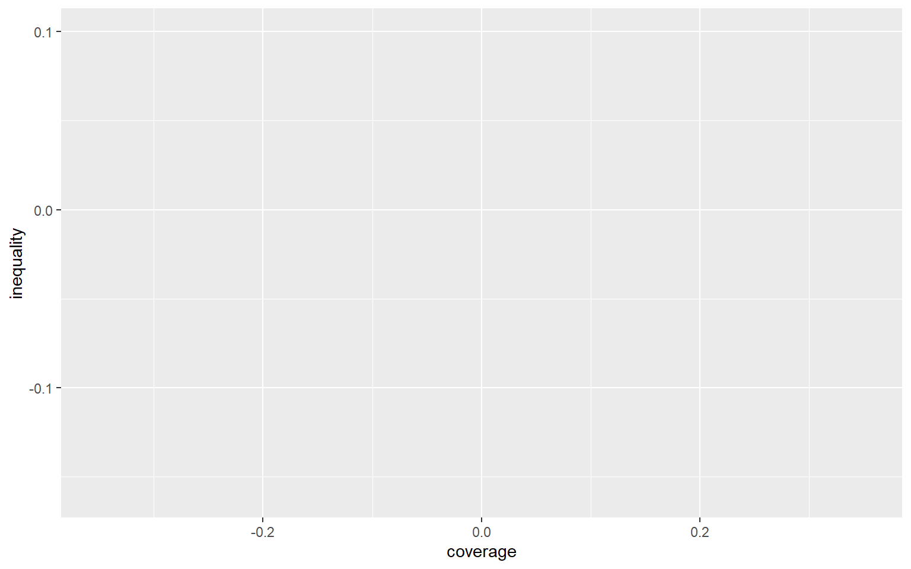
ggplot(df_plot, aes(x = coverage, y = inequality)) +
geom_point()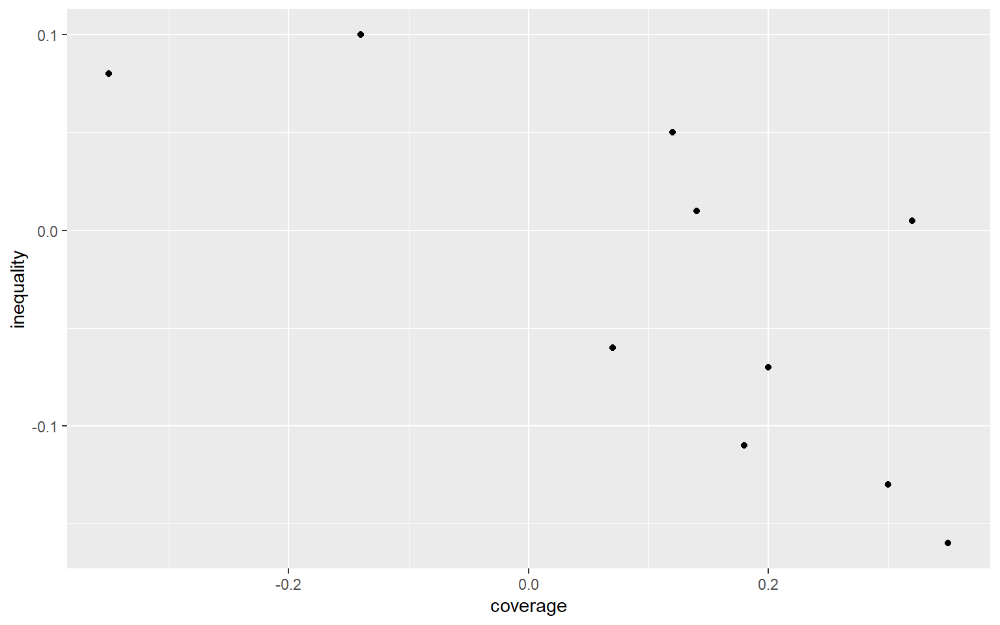
ggplot(df_plot, aes(x = coverage, y = inequality)) +
geom_point() +
geom_text(aes(label = country))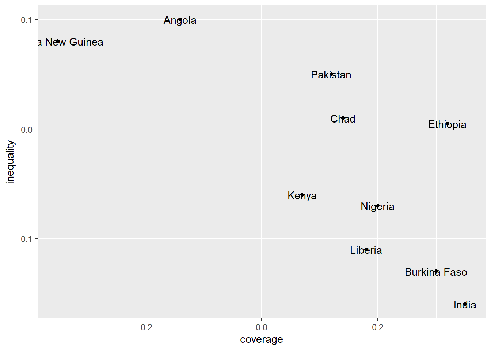
ggplot(df_plot, aes(x = coverage, y = inequality)) +
geom_point() +
geom_text(aes(label = country), hjust = -0.2, vjust = 0.2)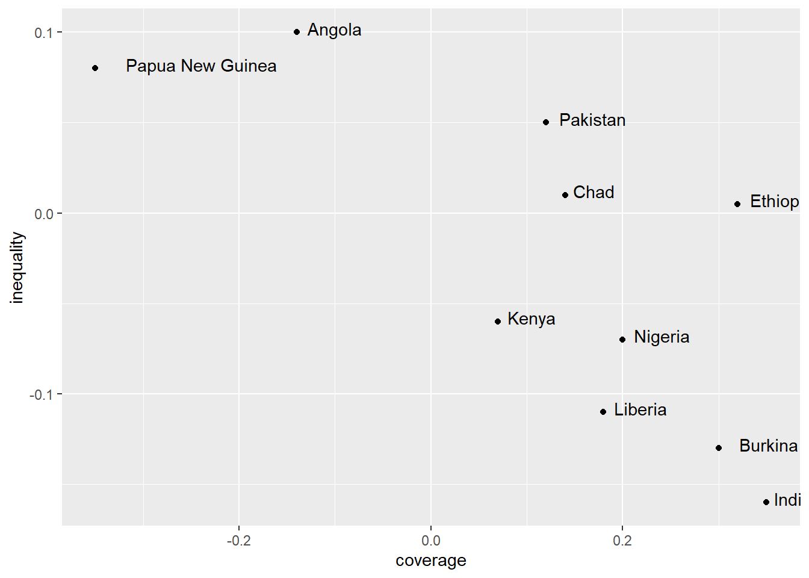
x, y.ggplot(df_plot, aes(x = coverage, y = inequality)) +
geom_point() +
geom_text(aes(label = country), hjust = -0.2, vjust = 0.2) +
xlim(c(-0.35, 0.55)) +
ylim(c(-0.17, 0.1))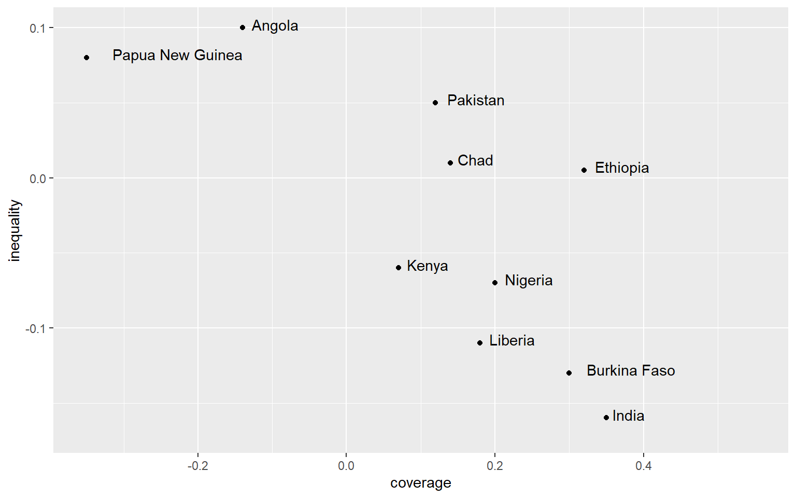
df_plot$size <- c(1.1, 0.6, 3, 1, 2, 1.1, 3, 0.7, 1.1, 8)
df_plot$color <- c("purple", "blue", "yellow", "purple", "purple", "purple", "purple", "purple", "purple", "yellow")
df_plot country coverage inequality size color
1 Angola -0.14 0.100 1.1 purple
2 Papua New Guinea -0.35 0.080 0.6 blue
3 Pakistan 0.12 0.050 3.0 yellow
4 Chad 0.14 0.010 1.0 purple
5 Ethiopia 0.32 0.005 2.0 purple
6 Kenya 0.07 -0.060 1.1 purple
7 Nigeria 0.20 -0.070 3.0 purple
8 Liberia 0.18 -0.110 0.7 purple
9 Burkina Faso 0.30 -0.130 1.1 purple
10 India 0.35 -0.160 8.0 yellowggplot(df_plot, aes(x = coverage, y = inequality)) +
geom_point(aes(size = size, color = color)) +
geom_text(aes(label = country), hjust = -0.2, vjust = 0.2) +
xlim(c(-0.35, 0.55)) +
ylim(c(-0.17, 0.1))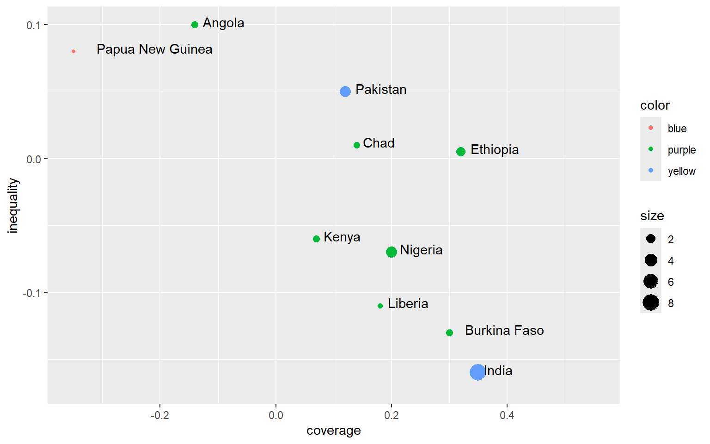
set.seed(123)
np <- 50
rd <- data.frame(
country = rep("", np),
coverage = rnorm(n = np, mean = 0.1, sd = 0.12),
inequality = rnorm(n = np, mean = -0.05, sd = 0.04),
size = rnorm(n = np, mean = 1, sd = 0.4),
color = sample(
c("red", "green", "darkblue", "yellow", "blue", "purple"),
np,
replace = T
)
)
head(rd) country coverage inequality size color
1 0.03274292 -0.039867259 0.7158374 green
2 0.07237870 -0.051141870 1.1027535 green
3 0.28704500 -0.051714818 0.9013232 red
4 0.10846101 0.004744091 0.8609830 green
5 0.11551453 -0.059030839 0.6193526 red
6 0.30580780 0.010658824 0.9819889 blueset.seed(123): dùng để cố định cách tạo ra các điểm ngẫu nhiên.
np <- 50: tạo ra 50 điểm ngẫu nhiên.
country = rep("", np): các điểm này không có tên quốc gia.
coverage = rnorm(n = np, mean = 0.1, sd = 0.12): số thực được tạo ra ngẫu nhiên theo phân phối bình thường với trung bình là 0.1 và độ lệch chuẩn là 0.12.
inequality = rnorm(n = np, mean = -0.05, sd = 0.04): số thực được tạo ra ngẫu nhiên theo phân phối bình thường với trung bình là -0.05 và độ lệch chuẩn là 0.04.
size = rnorm(n = np, mean = 1, sd = 0.4): số thực được tạo ra ngẫu nhiên theo phân phối bình thường với trung bình là 1 và độ lệch chuẩn là 0.4.
color = sample(1:6, np, replace = T): màu sắc là số nguyên ngẫu nhiên từ 1 đến 6.
Chúng ta thử ghép 2 bộ dữ liệu.
df_plot <- rbind(df_plot, rd)
ggplot(df_plot, aes(x = coverage, y = inequality)) +
geom_point(aes(size = size, color = color)) +
geom_text(aes(label = country), hjust = -0.2, vjust = 0.2) +
xlim(c(-0.35, 0.55)) +
ylim(c(-0.17, 0.1))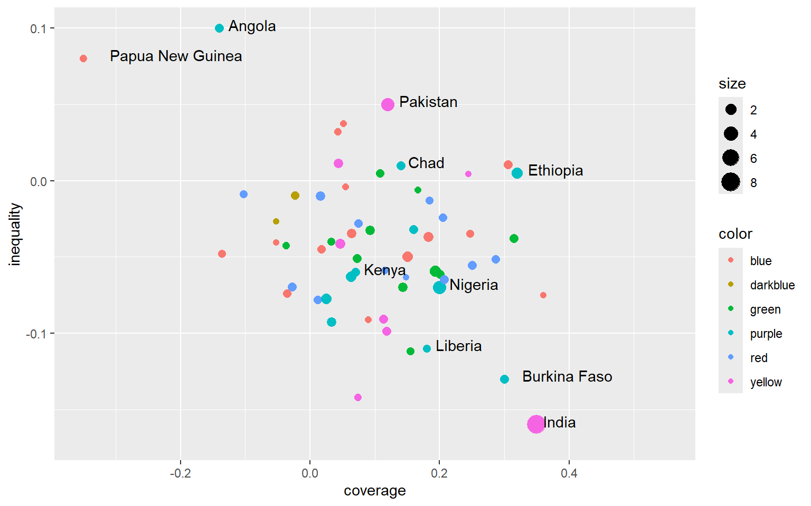
cols <- c(
"red" = "#fa8495",
"green" = "#4ca258",
"darkblue" = "#6493bb",
"yellow" = "#d7c968",
"blue" = "#7dd8f3",
"purple" = "#bc5c91"
)
ggplot(df_plot, aes(x = coverage, y = inequality)) +
geom_point(aes(size = size, color = color), alpha = 0.8) +
geom_text(aes(label = country), hjust = -0.2, vjust = 0.2) +
geom_vline(xintercept = 0, color = "#999999") +
geom_hline(yintercept = 0, color = "#999999") +
scale_x_continuous(breaks = c(-0.25, 0, 0.25, 0.5),
limits = c(-0.4, 0.55)) +
scale_y_continuous(breaks = c(-0.1, 0, 0.1), limits = c(-0.16, 0.1)) +
scale_size_continuous(
breaks = c(2, 4, 6, 8),
labels = c("50 million", "100 million", "150 million", "200 million"),
range = c(0, 8),
guide = guide_legend(order = 1)
) +
scale_color_manual(
values = cols,
breaks = c("red", "green", "darkblue", "yellow", "blue", "purple"),
labels = c(
"Central Europe, Eastern Europe and Central Asia",
"Latin America and Caribbean",
"North Africa and Middle East",
"South Asia",
"Southeast Asia, East Asia and Oceania",
"Sub-Saharan Africa"
),
guide = guide_legend(order = 2)
) +
labs(x = "Change in MCV1 coverage (2019-2000)",
y = "Change in absolute geographical inequality (2019-2000)",
size = NULL,
color = NULL) +
theme_classic() +
theme(
legend.position = "top",
legend.direction = "vertical",
legend.text = element_text(size = 11),
legend.key.height = unit(0.5, "cm"),
axis.text = element_text(size = 11)
)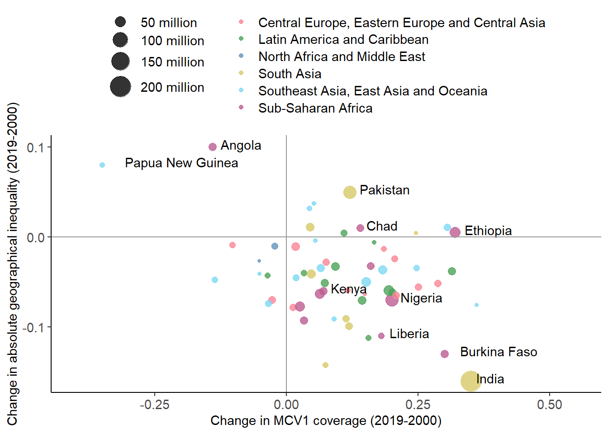
Trước khi bạn muốn tạo bản đồ, bạn phải có shapefile (định dạng là .shp).
Trong ggplot2, bạn có thể sử dụng hàm geom_map để tạo bản đồ.
Bạn có thể xem thêm thông tin trong Cheatsheet.
Nếu sử dụng `ggplot2, chúng ta cần sử dụng tidyverse.